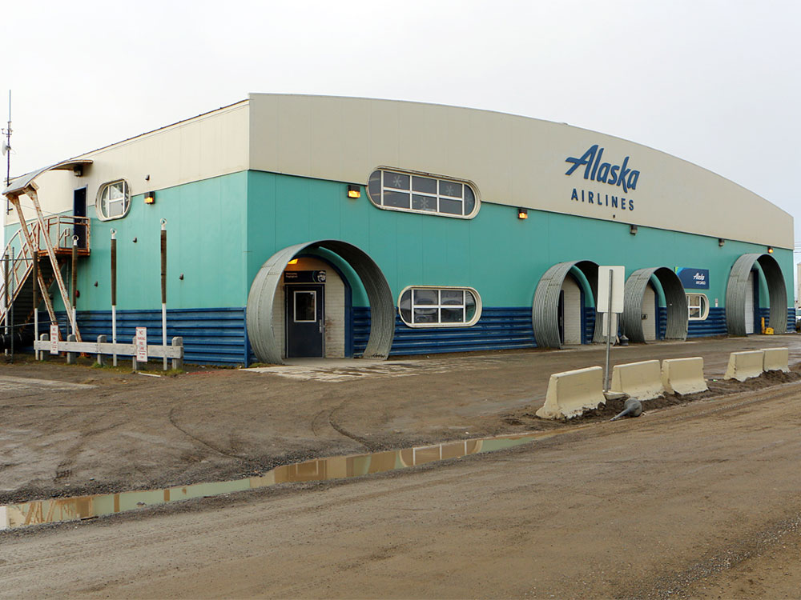
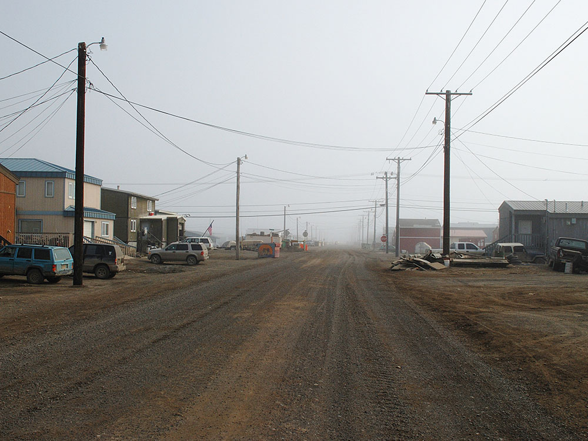
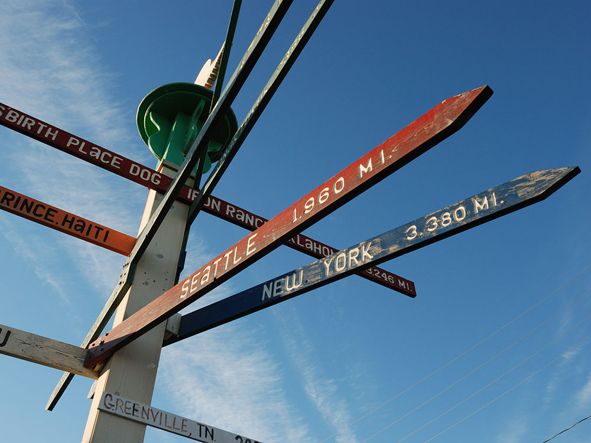
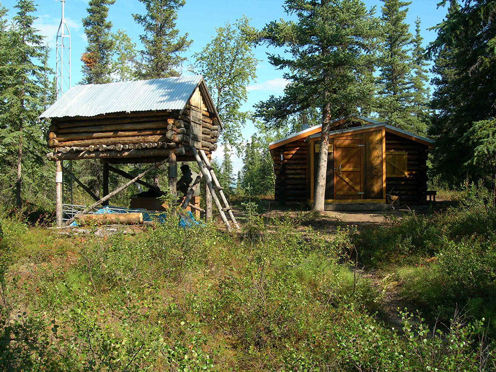
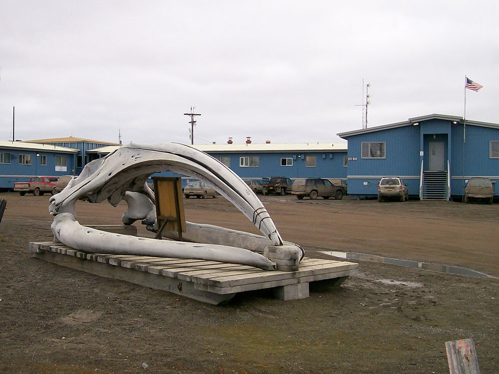
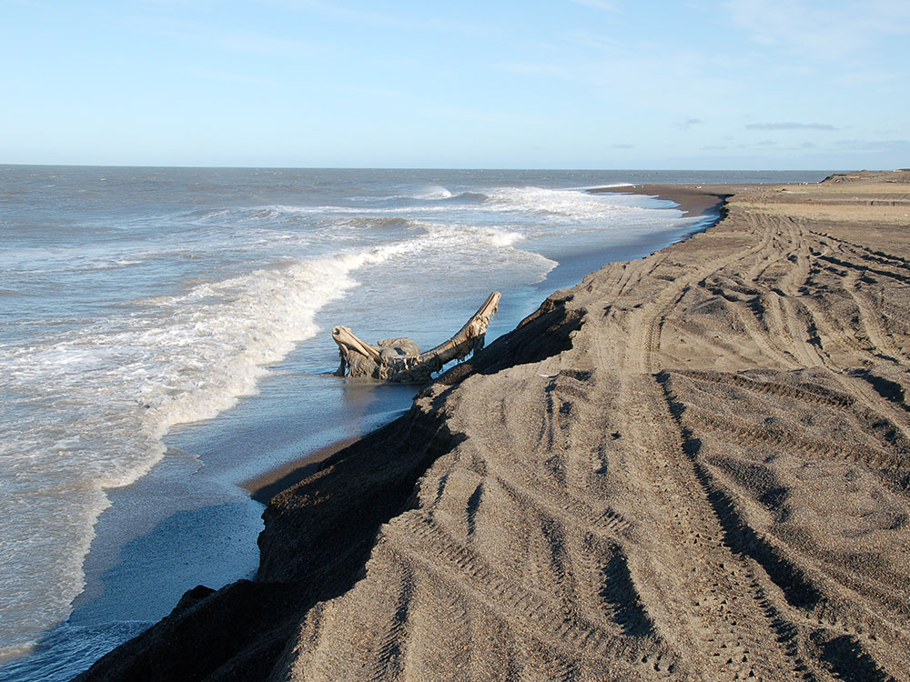
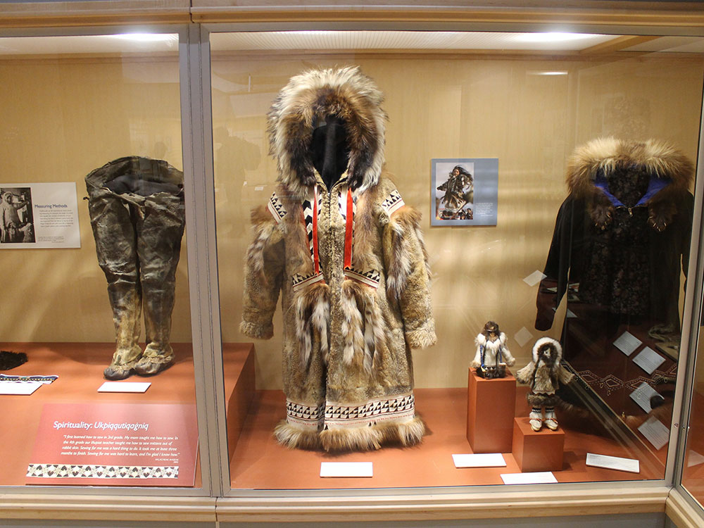
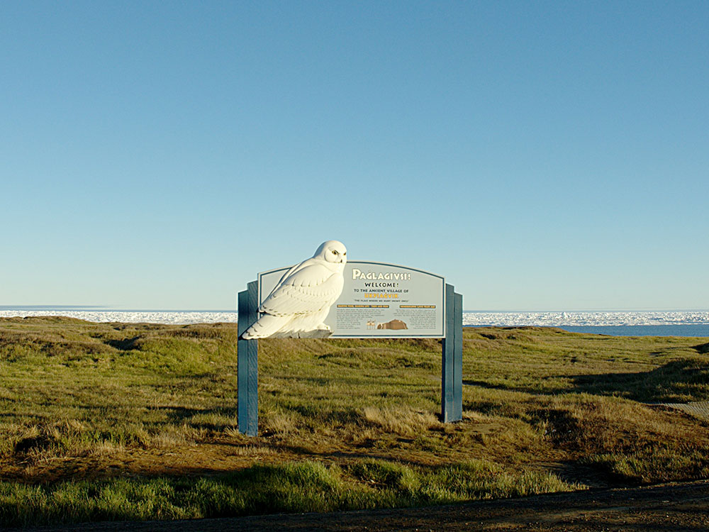
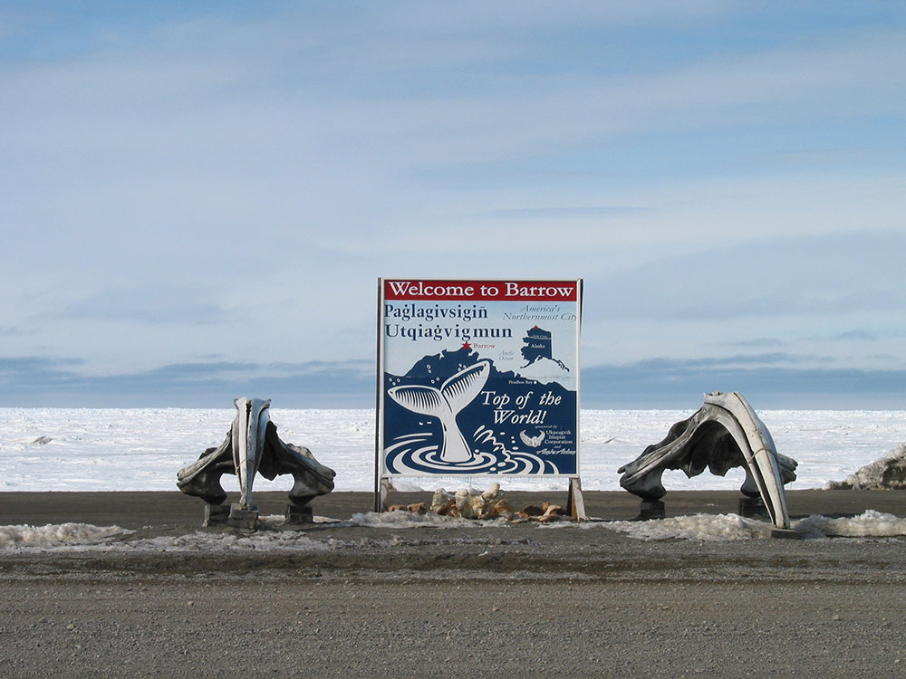

Known as Barrow from 1901 to 2016 and located north of the Arctic Circle, Utqiaġvik is one of the northernmost cities in the world and the northernmost in the United States
General Information
How to Get There
From Fairbanks, AK (~540 mi by air): No road connection exists; fly Alaska Airlines from Fairbanks International Airport directly to Wiley Post-Will Rogers Memorial Airport (BRW) in Utqiagvik in approximately 2 hours.
Overview
Utqiagvik, formerly called Barrow, is the northernmost city in the United States, on the Arctic Ocean coast of Alaska's North Slope, about 330 miles north of the Arctic Circle. It is a remote Iñupiat community of about 4,500 people, accessible only by air, where the sun does not set for about 80 days in summer and does not rise for about two months in winter. The town is known for its whaling traditions, its Arctic landscape, and as the site of scientific research on climate and the Arctic.
Visitors come to Utqiagvik to stand at the northernmost point in the U.S., to see the midnight sun or the northern lights, and to learn about Iñupiat culture at the Iñupiat Heritage Center. They also come to see polar bears in the fall, the whale bones at Browerville, and the Arctic Ocean, which can be touched on a polar dip.
History
The Iñupiat have lived on this coast for at least 1,500 years, in a village called Ukpeaġvik, "the place where snowy owls are hunted." British explorers named Point Barrow in 1826 for Sir John Barrow, and the town was called Barrow until 2016, when residents voted to restore its Iñupiaq name. Commercial whalers, a mission, and a trading post arrived in the late 1800s, and in 1935, the famous aviator Wiley Post and humorist Will Rogers died in a plane crash near Barrow. Oil was discovered at Prudhoe Bay in 1968, and the North Slope Borough, headquartered here, was formed in 1972 to use the oil revenue to provide services to the region.
Sightseeing and Popular Landmarks
The northernmost point in the United States is at Point Barrow, a gravel spit beyond the town, accessible by tour, and a whale-bone arch on the beach is a landmark. The Iñupiat Heritage Center, run by the North Slope Borough, has exhibits and demonstrations of crafts, dancing, and traditional skills, and the Wiley Post-Will Rogers Memorial marks the site of the 1935 crash. The Utqiaġvik Arctic Research Facility and the climate observatory, run by NOAA, study the changing Arctic.
Culture and Museums
The Iñupiat Heritage Center is the center of cultural life, with a museum, a library, and performances, and the whaling tradition is central: the Iñupiat harvest bowhead whales in spring and fall, and the community celebrates with Nalukataq, the spring whaling festival, in June. Visitors can learn about subsistence hunting and see traditional skin boats, umiaks, and the famous Iñupiat dancing. The Barrow Arctic Science Consortium coordinates research.
Parks
The flat tundra around Utqiagvik is covered with lakes and wildflowers in summer, and the town is a stop for migratory birds, such as the snowy owl and the eider, in the Arctic. The Arctic National Wildlife Refuge lies to the east and the National Petroleum Reserve to the west. The Chukchi and Beaufort Seas meet at the point, and the sea ice is visible most of the year.
Seasons and Weather
Utqiagvik has a polar tundra climate. Summers are cool, with highs in the 40s°F, and winters are extremely cold, with highs around -10°F, wind chills far lower, and about 30 inches of snow. The sun stays above the horizon from about May 10 to August 2 and stays below it from about November 18 to January 23, and visitors come mostly from June to August.
Things to Do
Visit America's Northernmost City
Utqiaġvik, formerly known as Barrow, sits along the Arctic Ocean and is the northernmost community in the United States. Located well above the Arctic Circle, the city offers visitors a unique opportunity to experience Arctic culture, extreme seasonal daylight patterns, remarkable wildlife, and breathtaking tundra landscapes.
Explore the Iñupiat Heritage Center
The Iñupiat Heritage Center is one of Utqiaġvik's premier cultural attractions. Visitors can learn about the history, traditions, and subsistence lifestyle of the Iñupiat people through exhibits, artwork, artifacts, demonstrations, and educational programs that highlight more than a thousand years of Arctic culture.
Visit Point Barrow
Point Barrow is the northernmost point of the United States and one of Alaska's most iconic destinations. Guided tours typically visit this remote location while providing insight into the region's history, archaeology, and importance to the local Iñupiat community.
See the Whale Bone Arch
One of the city's most recognizable landmarks, the Whale Bone Arch consists of massive bowhead whale jawbones overlooking the Arctic Ocean. The arch symbolizes the deep connection between the Iñupiat people and subsistence whaling traditions and is one of the most photographed locations in Utqiaġvik.
Touch the Arctic Ocean
Few destinations in North America allow visitors to easily stand beside the Arctic Ocean. The beaches near town provide an opportunity to experience the Arctic coastline, observe sea ice conditions, and even dip a hand or foot into the frigid waters.
Visit the Wiley Post-Will Rogers Memorial
This monument commemorates famed aviator Wiley Post and humorist Will Rogers, who lost their lives in a plane crash near Utqiaġvik in 1935. The memorial serves as an important historical landmark and offers insight into Alaska's aviation history.
Experience the Midnight Sun
During summer, the sun remains above the horizon continuously for weeks at a time. Visitors can enjoy outdoor activities, sightseeing, and photography around the clock while experiencing one of the Arctic's most remarkable natural phenomena.
See Polar Night
Winter brings the opposite experience, as the sun remains below the horizon for an extended period. The unique twilight conditions create dramatic Arctic landscapes and opportunities to experience life in one of the northernmost communities on Earth.
Attend Nalukataq
Nalukataq is the traditional whaling festival celebrated after a successful spring bowhead whale hunt. The event includes traditional foods, dancing, cultural activities, and the famous blanket toss, making it one of Alaska's most distinctive cultural celebrations.
View the Northern Lights
From autumn through spring, Utqiaġvik's northern latitude and dark Arctic skies provide excellent opportunities to observe the aurora borealis. Displays of green, purple, and red lights often illuminate the sky during periods of strong geomagnetic activity.
Observe Arctic Wildlife
The region surrounding Utqiaġvik supports a variety of Arctic wildlife including polar bears, Arctic foxes, migratory birds, seals, whales, caribou, and other species adapted to life in the Far North.
Top Trails and Outdoor Routes
Barrow Beach Shoreline Walk
Length: Approximately 1 to 2 miles round trip
Elevation Gain: Minimal
Difficulty: Easy
This walk along the Arctic Ocean provides opportunities to photograph sea ice, observe wildlife, visit the Whale Bone Arch, and experience the unique coastal environment of northern Alaska.
Point Barrow Exploration Route
Length: Varies by tour route
Elevation Gain: Minimal
Difficulty: Easy
Visitors reaching Point Barrow can walk along Arctic beaches and tundra landscapes while experiencing the northernmost point in the United States and learning about the area's cultural and archaeological significance.
Emaiksoun Lake Route
Length: Approximately 3 to 5 miles round trip
Elevation Gain: Minimal
Difficulty: Easy to Moderate
This tundra hike leads to one of the area's freshwater lakes and offers opportunities to view migratory birds, Arctic vegetation, and expansive views of the surrounding landscape.
Utqiaġvik Tundra Exploration Areas
Length: Varies by route
Elevation Gain: Minimal
Difficulty: Easy to Moderate
The open tundra surrounding the city allows visitors to explore Arctic ecosystems, observe wildlife, photograph wildflowers during summer, and experience the vast landscapes that characterize Alaska's North Slope.
This article uses material from Wikipedia as well as information from official tourism and institutional sources. Key references include North Slope Borough, Iñupiat Heritage Center, Travel Alaska, NOAA Barrow Observatory, and National Weather Service Fairbanks. Wikipedia material is from the article "Utqiagvik, Alaska", and is available under the Creative Commons Attribution-Share-Alike License 3.0.

.jpg){kind=link}









.jpg){kind=link}




